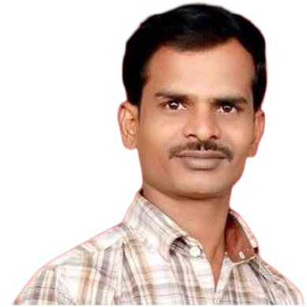

';">Hardware, Silicon Bring-Up & AI-Skilled Technical Professional with 17+ years of extensive experience in IT infrastructure support, hardware validation, power analysis, and laboratory operations. Proven track record in supporting complex silicon bring-up, power-on activities, troubleshooting leading smartphone/device platforms (Apple iPhone, Google Pixel, Xiaomi/Mi, Realme, OPPO), and optimizing technical workflows. Certified in AI/Generative AI fundamentals, ITIL® 4, and PMP training with a strong foundation in Electronics Mechanics and Information Technology.
End-to-end management of IT lab environments, ESD safety protocols, 100% audit readiness, and high-value silicon/bonded asset tracking.
Equipment & Hardware Maintenance:Calibration, maintenance, and setup of high-precision lab tools including Oscilloscopes (CRO), DAQ platforms, Agilent Power Supplies, Logic Analyzers, Signal Generators, and Multimeters.
Procurement & Vendor Operations:Strategic sourcing, lab equipment & components procurement, vendor negotiations, contract handling, and supply chain management via SAP Ariba.
Driving high-availability infrastructure operations, ITIL incident & change management, ITSM ticketing, and SLA compliance.
Workflow Automation & Validation:Streamlining EVT / DVT (Engineering Validation Test / Design Validation Test) test-benches, validation pipelines, and hardware bring-up workflows.
Performance, Power Analysis & Thermal Debugging:Advanced device teardowns, thermal management analysis, power rail debugging, circuit power analysis, and signal integrity assessments.
Leading engineering teams, aligning cross-departmental HW/SW deliverables with enterprise goals, and standardizing technical workflows.
Lifecycle & Material Control:Bonded asset tracking, FIFO inventory protocols, zero-leakage compliance, and lowering total cost of ownership (TCO).
Role: Technical Lead Analyst – IT Infrastructure & Lab Operations
Tenure: April 2025 – June 2026 (Google Client Project) | July 2026 – Present (Undergoing Technical Training)
Role: Validation Engineer / Team Lead / Lab Admin / QA-QC Engineer
Role / Designation: System Engineer / Senior Rework Engineer / Technical Team Lead / Lab Admin / Lab Operations Lead
Focus: IT Infrastructure Support, Device Troubleshooting, System Readiness & Lab Coordination.
Handled device support, configuration, and hardware troubleshooting for Apple ecosystem devices (iPhones, iPad/Tablets, Workstations). Maintained lab operational readiness, system deployment, and technical documentation.
Focus: Intel Silicon Bring-Up, Board Power-On Activities & Hardware Validation.
Executed Intel Silicon Bring-Up Board Power-On Activities, platform power analysis, and hardware bring-up workflows. Managed test-lab equipment readiness, system qualification, MCU/FPGA/eMMC flashing, and validation bench setup under strict Intel lab protocols.